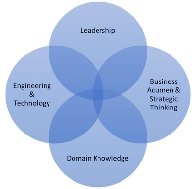

Brendan Barsness

About
Hands-on technical professional with a unique skillset mix of leadership, engineering, domain knowledge, and business acumen. My colleagues frequently commend me for my ability to rapidly assimilate information from many different sources, come up with sound strategic alternatives, and communicate solutions to various audiences. I’m passionate about informing decision makers by providing analysis results using proven methods and credible tools/data. I've enjoyed leading teams that address complex challenges in numerous domains. For instance, helping organizations evaluate operational and cost impacts of a particular design approach, securing critical digital infrastructure by mitigating effects due to malicious cyber activities, and .
Email:Github: BCBarsness

Professional Experience Summary
Proven ability to form, lead, and manage multiple teams balancing cost, schedule, performance, and risk. Successfully led a $9M/yr program consisting of a 50-person distributed multidisciplinary team.
EngineeringRecognized expertise in Architecture and Systems Engineering, Systems Integration and Interoperability, and Software Development. Experience in all phases of the Software Development Lifecycle from complex mission critical embedded systems to small open source web applications using Agile methods.
Modeling, Simulation & AnalysisSignificant experience developing and integrating systems that help analyze alternatives (e.g. model ‘what if’ scenarios), provide simulation-based training (e.g. immersive virtual environments), and demonstrate capabilities. Applied experimental design concepts to address decision makers’ questions of interest.
CybersecurityExecuted cybersecurity test events focused on defeating the cyber kill chain. Experience with common tools that support vulnerability analysis, exploitation, and PCAP (e.g. current Kali Linux distribution).
Data ScienceExperience with data analysis workflow using Python, SQL, and numerous visualization tools/libraries.
Business DevelopmentSignificant experience in capturing new business and proposal development. Technical Lead for an awarded proposal effort valued over $800M.
Work Experience
Ventrom
Consultant2016 - Present
Provide analytical and systems engineering support of data analysis and visualization systems.
Lockheed Martin
Product Manager2014 - 2016
Managed the development of an analytic framework and Modeling and Simulation (M&S) environment to investigate Air Force fuel demand optimizations.
- Defined key operational and cost metrics, identified credible models and datasets to generate outcomes, developed an integrated modeling environment exercising a common data ontology, and built dynamic visualizations to clearly communicate results to decision makers.
- Regularly briefed senior government and military officials on analysis methodology and technology roadmap.
- Grew the contract value by 150%.
Cybersecurity Test Event Designer
2014 - 2016
Test Designer / Event Lead for the DoD National Cyber Range (NCR) supporting multiple cyber campaigns that perform experimentation, development, testing, training, and mission rehearsal of offensive and defensive cyber-warfighting capabilities.
- Defined functional and operational requirements, and developed technical specifications based on cybersecurity stakeholder objectives.
- Recommended architectures, scenarios, tactics, tools, and initiatives to conduct cybersecurity assessments and cyberspace operations training in collaboration with government, military, and academic partners.
- Executed frequent distributed cyber test events aligned with DoD Cyber Strategy lines of effort.
- Developed reports, performed demonstrations, and briefed senior leadership on operational effects and risk mitigation strategies of various cyber-attack vectors.
Project Engineer
2011 - 2014
Successfully performed multiple, often concurrent roles supporting corporate business initiatives.
- Produced DARPA’s NCR operational procedures and contributed to the System Security Plan (SSP) and Certification & Accreditation (C&A) artifacts.
- Developed application software for Virtual World Framework (VWF), an open source synchronized collaborative 3D environment for web/mobile.
- Developed the corporate Best Engineering Practices for Software Intensive Systems assessment.
- Led the technical execution of several successful new business captures.
Modeling & Simulation Team Lead
2009 - 2011
Led a team of 50 responsible for experimentation and analysis of Joint Warfighter capabilities.
- Managed the requirements analysis, design/architecture, implementation, I&T, and VV&A for software development, scenario development, database development, interoperability, and event execution.
- Led the planning, procurement, and setup of the Enterprise Virtual Data Center effectively doubling the available computing and storage capacity.
- Planned, organized, directed, and tracked major aspects of concurrent projects ensuring technical, schedule, and contract compliance.
- Ensured strict compliance of current DISA guidelines (STIGs) and certification and accreditation requirements (DIACAP, since replaced by the Risk Management Framework).
2005 - 2009
Designed, developed, integrated, and tested application software.
Education
Computer Science, Master's
Old Dominion University
Psychology, Bachelor's
Minors: Economics, Sociology
Virginia Tech
Skills
-
Data Wrangling / Visualization
- NumPy, Pandas, SciPy
- Matplotlib
- Tableau
- d3.js
- Plotly
- Jupyter Notebook
-
Software Languages
- Python
- Javascript
- Java
- Ruby
- C++
- C
- Smalltalk
- SQL
-
Dev Tools
- Git, SVN, CVS, ClearCase
- GitHub, Bitbucket
- Eclipse
- Atom
- UML Case Tools
-
Web Development
- HTML5
- CSS3
- Javascript, Node
- Bootstrap
- Virtual World Framework
-
Project Management
- JIRA
- Confluence
- Redmine
- Slack
- Trello
- IBM ClearQuest
-
Platforms
- Amazon Web Services (AWS) EC2
- Oracle VirtualBox
- Mac / Win
- Fedora
- Debian
- Ubuntu
- RHEL